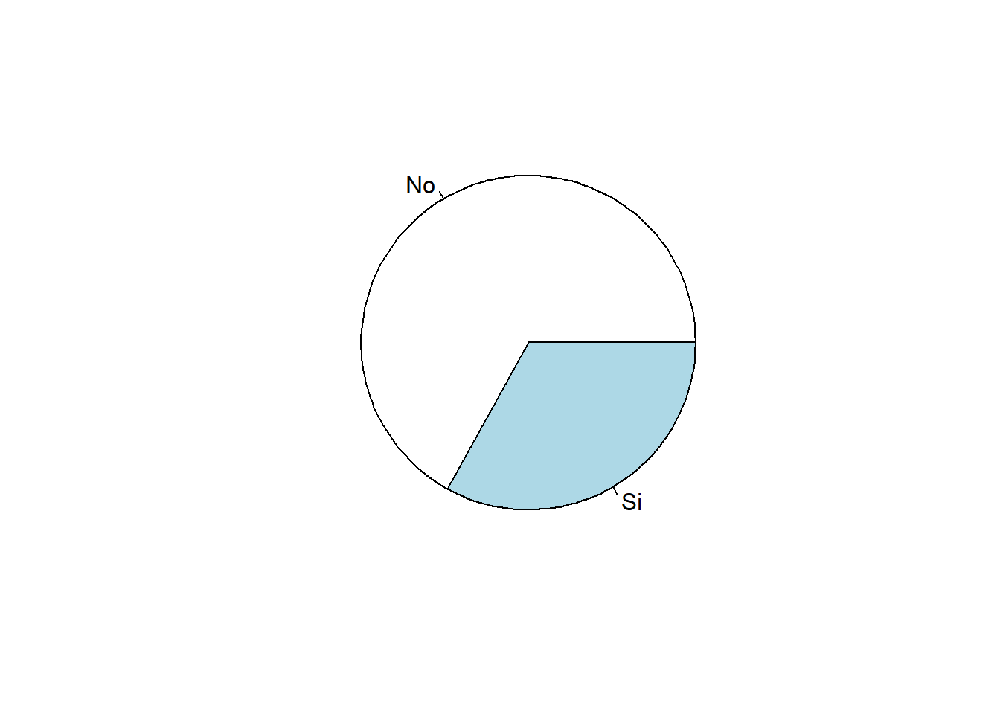
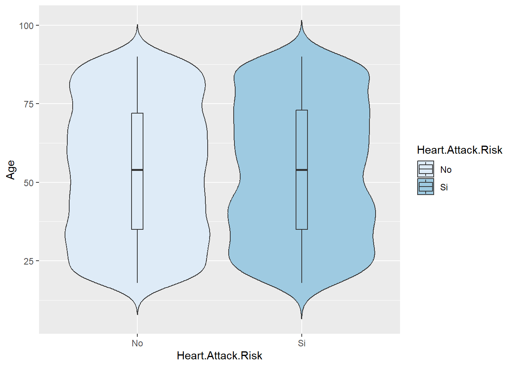
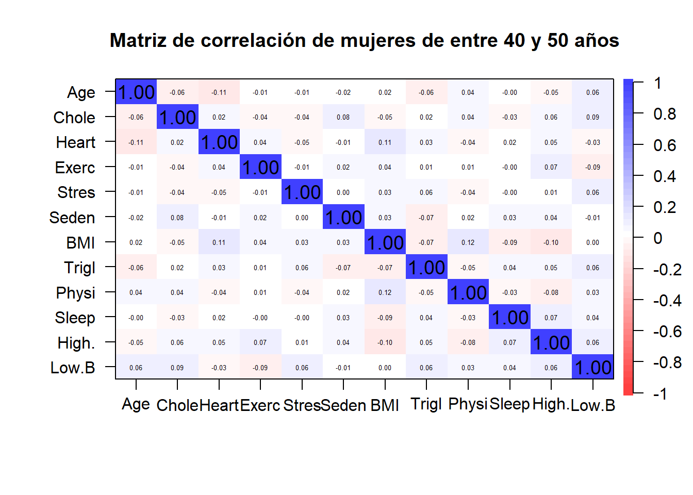

library(tidyverse)
library(dplyr)
library(GGally)
library(psych)
library(skimr)Entrega 3 Análisis de Datos
Presentación del problema
Vamos a tratar una base de datos relacionados con la predicción de riesgo de ataque cardíaco. Este hecho es un problema que afecta a un gran porcentaje de la población mundial y es de interés poder predecir esta dolencia.
Nuestro objetivo para este estudio sería: 1. Estudiar algunos perfiles con riesgo de padecer un ataque al corazón 2. Comprobar si hay diferencias entre diferentes continentes respecto al mismo perfil de riesgo. 3. Poder predecir si un individuo tiene riesgo de sufrir un ataque al corazón.
Los datos provienen de la página web Kaggle: Kaggle - Heart Attack Prediction.
El dataset consta de 8763 muestras, donde cada una representa una serie de características de un paciente. A cada paciente se le atribuyen 26 valores, uno de ellos es su ID, y el resto son variables relacionadas con la salud cardíaca, tanto geográficas como de hábitos personales.
Antes de explicar cada variable, modifiquemos la tabla de datos para tenerla limpia en formato tidy.
Cargamos la librerías que utilizaremos
Convertir los datos en tidy
Cargamos la tabla de datos y la convertimos a tibble para facilitarnos la manipulación.
datos = read.csv("heart_attack_prediction_dataset.csv", header = T)
datos = datos %>% as.tibbleVamos a modificar el data set para que sea más cómodo a la hora de trabajar con él. Empezamos por cambiar el ID del paciente por una enumeración básica.
datos = datos %>%
mutate(Patient.ID = c(1:8763))Transformamos las variables qualitativas en factor y, en las binarias (0: No, 1: Si) cambiamos los valores para que sea más ilustrativa y entendible:
datos = datos %>%
mutate(Sex = Sex %>% as.factor)
datos = datos %>%
mutate(Diet = Diet %>% as.factor)
datos = datos %>%
mutate(Country = Country %>% as.factor)
datos = datos %>%
mutate(Continent = Continent %>% as.factor)
datos = datos %>%
mutate(Hemisphere = Hemisphere %>% as.factor)
datos = datos %>%
mutate(Diabetes = if_else(Diabetes == 0, "No", "Si") %>% as.factor)
datos = datos %>%
mutate(Family.History = if_else(Family.History == 0, "No", "Si") %>% as.factor)
datos = datos %>%
mutate(Smoking = if_else(Smoking == 0, "No", "Si") %>% as.factor)
datos = datos %>%
mutate(Obesity = if_else(Obesity == 0, "No", "Si") %>% as.factor)
datos = datos %>%
mutate(Alcohol.Consumption = if_else(Alcohol.Consumption == 0, "No", "Si") %>% as.factor)
datos = datos %>%
mutate(Previous.Heart.Problems = if_else(Previous.Heart.Problems == 0, "No", "Si") %>% as.factor)
datos = datos %>%
mutate(Medication.Use = if_else(Medication.Use == 0, "No", "Si") %>% as.factor)
datos = datos %>%
mutate(Heart.Attack.Risk = if_else(Heart.Attack.Risk == 0, "No", "Si") %>% as.factor)El siguiente paso va a ser separar la variable qualitativa Blood.Pressure en dos nuevas variables, ésta vez cuantitativas, ya que la presión arterial está representada como un símbolo que equivale a la presión alta y la baja separadas por una barra:
# vamos a convertir la columna blood.pressure en high y low
datos <- datos %>%
rowwise() %>%
mutate(
High.Blood.Pressure = as.numeric(unlist(strsplit(Blood.Pressure, "/"))[1]),
Low.Blood.Pressure = as.numeric(unlist(strsplit(Blood.Pressure, "/"))[2])
) %>%
ungroup()La variable edad es conveniente tenerla estratificada en varios niveles ya que no vamos a poder sacar conclusiones si consideramos cada edad individualmente:
Por último, vamos a eliminar las variables que consideramos que no van a ser concluyentes para el estudio, en este caso, eliminamos la variable Income (nivel de ingresos del paciente) y la variable que anteriormente separamos en dos:
datos <- datos[,c(-5,-18)]En este punto, tenemos la tabla de datos con la información que queremos estudiar, reordenemos las columnas para finalizar la conversión a tidy data:
datos <- datos %>%
relocate(where(is.factor)) %>%
relocate(Patient.ID)
# 1 id
# 2-14 qual
# 15-26 quantVeamos como se estructuran nuestros datos:
str(datos)tibble [8,763 × 26] (S3: tbl_df/tbl/data.frame)
$ Patient.ID : int [1:8763] 1 2 3 4 5 6 7 8 9 10 ...
$ Sex : Factor w/ 2 levels "Female","Male": 2 2 1 2 2 1 2 2 2 1 ...
$ Diabetes : Factor w/ 2 levels "No","Si": 1 2 2 2 2 2 1 1 2 1 ...
$ Family.History : Factor w/ 2 levels "No","Si": 1 2 1 2 2 2 1 1 1 2 ...
$ Smoking : Factor w/ 2 levels "No","Si": 2 2 1 2 2 2 2 2 2 2 ...
$ Obesity : Factor w/ 2 levels "No","Si": 1 2 1 1 2 1 1 2 2 2 ...
$ Alcohol.Consumption : Factor w/ 2 levels "No","Si": 1 2 1 2 1 2 2 2 1 2 ...
$ Diet : Factor w/ 3 levels "Average","Healthy",..: 1 3 2 1 3 3 2 1 1 3 ...
$ Previous.Heart.Problems : Factor w/ 2 levels "No","Si": 1 2 2 2 2 2 1 1 1 1 ...
$ Medication.Use : Factor w/ 2 levels "No","Si": 1 1 2 1 1 2 1 2 1 1 ...
$ Country : Factor w/ 20 levels "Argentina","Australia",..: 1 4 7 4 17 8 4 11 3 11 ...
$ Continent : Factor w/ 6 levels "Africa","Asia",..: 6 5 4 5 2 4 5 2 6 2 ...
$ Hemisphere : Factor w/ 2 levels "Northern Hemisphere",..: 2 1 1 1 1 1 1 1 2 1 ...
$ Heart.Attack.Risk : Factor w/ 2 levels "No","Si": 1 1 1 1 1 2 2 2 1 1 ...
$ Age : int [1:8763] 67 21 21 84 66 54 90 84 20 43 ...
$ Cholesterol : int [1:8763] 208 389 324 383 318 297 358 220 145 248 ...
$ Heart.Rate : int [1:8763] 72 98 72 73 93 48 84 107 68 55 ...
$ Exercise.Hours.Per.Week : num [1:8763] 4.17 1.81 2.08 9.83 5.8 ...
$ Stress.Level : int [1:8763] 9 1 9 9 6 2 7 4 5 4 ...
$ Sedentary.Hours.Per.Day : num [1:8763] 6.62 4.96 9.46 7.65 1.51 ...
$ BMI : num [1:8763] 31.3 27.2 28.2 36.5 21.8 ...
$ Triglycerides : int [1:8763] 286 235 587 378 231 795 284 370 790 232 ...
$ Physical.Activity.Days.Per.Week: int [1:8763] 0 1 4 3 1 5 4 6 7 7 ...
$ Sleep.Hours.Per.Day : int [1:8763] 6 7 4 4 5 10 10 7 4 7 ...
$ High.Blood.Pressure : num [1:8763] 158 165 174 163 91 172 102 131 144 160 ...
$ Low.Blood.Pressure : num [1:8763] 88 93 99 100 88 86 73 68 105 70 ...Variables
skim(datos)| Name | datos |
| Number of rows | 8763 |
| Number of columns | 26 |
| _______________________ | |
| Column type frequency: | |
| factor | 13 |
| numeric | 13 |
| ________________________ | |
| Group variables | None |
Variable type: factor
| skim_variable | n_missing | complete_rate | ordered | n_unique | top_counts |
|---|---|---|---|---|---|
| Sex | 0 | 1 | FALSE | 2 | Mal: 6111, Fem: 2652 |
| Diabetes | 0 | 1 | FALSE | 2 | Si: 5716, No: 3047 |
| Family.History | 0 | 1 | FALSE | 2 | No: 4443, Si: 4320 |
| Smoking | 0 | 1 | FALSE | 2 | Si: 7859, No: 904 |
| Obesity | 0 | 1 | FALSE | 2 | Si: 4394, No: 4369 |
| Alcohol.Consumption | 0 | 1 | FALSE | 2 | Si: 5241, No: 3522 |
| Diet | 0 | 1 | FALSE | 3 | Hea: 2960, Ave: 2912, Unh: 2891 |
| Previous.Heart.Problems | 0 | 1 | FALSE | 2 | No: 4418, Si: 4345 |
| Medication.Use | 0 | 1 | FALSE | 2 | No: 4396, Si: 4367 |
| Country | 0 | 1 | FALSE | 20 | Ger: 477, Arg: 471, Bra: 462, Uni: 457 |
| Continent | 0 | 1 | FALSE | 6 | Asi: 2543, Eur: 2241, Sou: 1362, Aus: 884 |
| Hemisphere | 0 | 1 | FALSE | 2 | Nor: 5660, Sou: 3103 |
| Heart.Attack.Risk | 0 | 1 | FALSE | 2 | No: 5624, Si: 3139 |
Variable type: numeric
| skim_variable | n_missing | complete_rate | mean | sd | p0 | p25 | p50 | p75 | p100 | hist |
|---|---|---|---|---|---|---|---|---|---|---|
| Patient.ID | 0 | 1 | 4382.00 | 2529.80 | 1 | 2191.50 | 4382.00 | 6572.50 | 8763 | ▇▇▇▇▇ |
| Age | 0 | 1 | 53.71 | 21.25 | 18 | 35.00 | 54.00 | 72.00 | 90 | ▇▇▇▇▇ |
| Cholesterol | 0 | 1 | 259.88 | 80.86 | 120 | 192.00 | 259.00 | 330.00 | 400 | ▇▇▇▇▇ |
| Heart.Rate | 0 | 1 | 75.02 | 20.55 | 40 | 57.00 | 75.00 | 93.00 | 110 | ▇▇▇▇▇ |
| Exercise.Hours.Per.Week | 0 | 1 | 10.01 | 5.78 | 0 | 4.98 | 10.07 | 15.05 | 20 | ▇▇▇▇▇ |
| Stress.Level | 0 | 1 | 5.47 | 2.86 | 1 | 3.00 | 5.00 | 8.00 | 10 | ▇▇▇▇▇ |
| Sedentary.Hours.Per.Day | 0 | 1 | 5.99 | 3.47 | 0 | 3.00 | 5.93 | 9.02 | 12 | ▇▇▇▇▇ |
| BMI | 0 | 1 | 28.89 | 6.32 | 18 | 23.42 | 28.77 | 34.32 | 40 | ▇▇▇▇▇ |
| Triglycerides | 0 | 1 | 417.68 | 223.75 | 30 | 225.50 | 417.00 | 612.00 | 800 | ▇▇▇▇▇ |
| Physical.Activity.Days.Per.Week | 0 | 1 | 3.49 | 2.28 | 0 | 2.00 | 3.00 | 5.00 | 7 | ▇▃▇▃▇ |
| Sleep.Hours.Per.Day | 0 | 1 | 7.02 | 1.99 | 4 | 5.00 | 7.00 | 9.00 | 10 | ▇▅▅▅▇ |
| High.Blood.Pressure | 0 | 1 | 135.08 | 26.35 | 90 | 112.00 | 135.00 | 158.00 | 180 | ▇▇▇▇▇ |
| Low.Blood.Pressure | 0 | 1 | 85.16 | 14.68 | 60 | 72.00 | 85.00 | 98.00 | 110 | ▇▇▇▇▇ |
Vamos a crear una tabla con la información de cada variable:
# Separamos los datos en variables cuantitativas y cualitativas
datos_quant <- datos[,c(15:26)]
datos_qual <- datos[,c(2:14)]
# Cuantitativas
Media = colMeans(datos_quant)
rango <- function(x){
return(max(x)-min(x))
}
Rango = round(apply(datos_quant, FUN = rango, MARGIN = 2), 3)
# algo aixi, pero mes ben fet:
tabla = data.frame(Media, Rango)
tabla Media Rango
Age 53.707977 72.000
Cholesterol 259.877211 280.000
Heart.Rate 75.021682 70.000
Exercise.Hours.Per.Week 10.014284 19.996
Stress.Level 5.469702 9.000
Sedentary.Hours.Per.Day 5.993690 11.998
BMI 28.891446 21.995
Triglycerides 417.677051 770.000
Physical.Activity.Days.Per.Week 3.489672 7.000
Sleep.Hours.Per.Day 7.023508 6.000
High.Blood.Pressure 135.075659 90.000
Low.Blood.Pressure 85.156111 50.000| qualitat | Quantit |
|---|---|
| Sex, Diabetes, Family.History, Smoking, Obesity, Alcohol.Consumption, Diet, Previous.Heart.Problems, Medication.Use, Country, Continent, Hemisphere, Heart.Attack.Risk | Age, Cholesterol, Heart.Rate, Exercise.Hours.Per.Week, Stress.Level, Sedentary.Hours.Per.Day, BMI, Triglycerides, Physical.Activity.Days.Per.Week, Sleep.Hours.Per.Day, High.Blood.Pressure, Low.Blood.Pressure |
summary(datos) Patient.ID Sex Diabetes Family.History Smoking Obesity
Min. : 1 Female:2652 No:3047 No:4443 No: 904 No:4369
1st Qu.:2192 Male :6111 Si:5716 Si:4320 Si:7859 Si:4394
Median :4382
Mean :4382
3rd Qu.:6572
Max. :8763
Alcohol.Consumption Diet Previous.Heart.Problems Medication.Use
No:3522 Average :2912 No:4418 No:4396
Si:5241 Healthy :2960 Si:4345 Si:4367
Unhealthy:2891
Country Continent Hemisphere
Germany : 477 Africa : 873 Northern Hemisphere:5660
Argentina : 471 Asia :2543 Southern Hemisphere:3103
Brazil : 462 Australia : 884
United Kingdom: 457 Europe :2241
Australia : 449 North America: 860
Nigeria : 448 South America:1362
(Other) :5999
Heart.Attack.Risk Age Cholesterol Heart.Rate
No:5624 Min. :18.00 Min. :120.0 Min. : 40.00
Si:3139 1st Qu.:35.00 1st Qu.:192.0 1st Qu.: 57.00
Median :54.00 Median :259.0 Median : 75.00
Mean :53.71 Mean :259.9 Mean : 75.02
3rd Qu.:72.00 3rd Qu.:330.0 3rd Qu.: 93.00
Max. :90.00 Max. :400.0 Max. :110.00
Exercise.Hours.Per.Week Stress.Level Sedentary.Hours.Per.Day
Min. : 0.002442 Min. : 1.00 Min. : 0.001263
1st Qu.: 4.981579 1st Qu.: 3.00 1st Qu.: 2.998794
Median :10.069559 Median : 5.00 Median : 5.933622
Mean :10.014284 Mean : 5.47 Mean : 5.993690
3rd Qu.:15.050018 3rd Qu.: 8.00 3rd Qu.: 9.019124
Max. :19.998709 Max. :10.00 Max. :11.999313
BMI Triglycerides Physical.Activity.Days.Per.Week
Min. :18.00 Min. : 30.0 Min. :0.00
1st Qu.:23.42 1st Qu.:225.5 1st Qu.:2.00
Median :28.77 Median :417.0 Median :3.00
Mean :28.89 Mean :417.7 Mean :3.49
3rd Qu.:34.32 3rd Qu.:612.0 3rd Qu.:5.00
Max. :40.00 Max. :800.0 Max. :7.00
Sleep.Hours.Per.Day High.Blood.Pressure Low.Blood.Pressure
Min. : 4.000 Min. : 90.0 Min. : 60.00
1st Qu.: 5.000 1st Qu.:112.0 1st Qu.: 72.00
Median : 7.000 Median :135.0 Median : 85.00
Mean : 7.024 Mean :135.1 Mean : 85.16
3rd Qu.: 9.000 3rd Qu.:158.0 3rd Qu.: 98.00
Max. :10.000 Max. :180.0 Max. :110.00
Análisis multivariante exploratorio
a = datos %>%
select(2,6,12,14,15,16,17) %>%
na.omit
pairs(a, col = c("red", "blue", "green", "yellow", "purple", "orange")[as.integer(a$Continent)],pch=18)
ggpairs(a)`stat_bin()` using `bins = 30`. Pick better value with `binwidth`.
`stat_bin()` using `bins = 30`. Pick better value with `binwidth`.
`stat_bin()` using `bins = 30`. Pick better value with `binwidth`.
`stat_bin()` using `bins = 30`. Pick better value with `binwidth`.
`stat_bin()` using `bins = 30`. Pick better value with `binwidth`.
`stat_bin()` using `bins = 30`. Pick better value with `binwidth`.
`stat_bin()` using `bins = 30`. Pick better value with `binwidth`.
`stat_bin()` using `bins = 30`. Pick better value with `binwidth`.
`stat_bin()` using `bins = 30`. Pick better value with `binwidth`.
`stat_bin()` using `bins = 30`. Pick better value with `binwidth`.
`stat_bin()` using `bins = 30`. Pick better value with `binwidth`.
`stat_bin()` using `bins = 30`. Pick better value with `binwidth`.Estimación del vector de medias y la matriz de covarianza y correlación
Calculemos el vector de medias. Para cada variable cuantitativa
apply(datos[,15:26], FUN = mean, MARGIN = 2) Age Cholesterol
53.707977 259.877211
Heart.Rate Exercise.Hours.Per.Week
75.021682 10.014284
Stress.Level Sedentary.Hours.Per.Day
5.469702 5.993690
BMI Triglycerides
28.891446 417.677051
Physical.Activity.Days.Per.Week Sleep.Hours.Per.Day
3.489672 7.023508
High.Blood.Pressure Low.Blood.Pressure
135.075659 85.156111 Veamos ahora la matriz de covariancia (a secas)
new_names = substr(names(datos[,c(15:26)]),1,5)
colnames(datos_quant) = new_names
n = length(datos$Patient.ID)
round(cov(datos_quant)*(n-1)/n,5) Age Chole Heart Exerc Stres Seden BMI
Age 451.49010 -15.64684 -1.67848 0.14816 1.11229 1.27268 -0.35068
Chole -15.64684 6538.12323 0.52326 10.06226 -5.66171 5.30115 8.83496
Heart -1.67848 0.52326 422.29326 0.98362 -0.26717 -0.72882 0.68802
Exerc 0.14816 10.06226 0.98362 33.44789 -0.15053 0.17552 0.13803
Stres 1.11229 -5.66171 -0.26717 -0.15053 8.17650 -0.05349 -0.05873
Seden 1.27268 5.30115 -0.72882 0.17552 -0.05349 12.01427 -0.00052
BMI -0.35068 8.83496 0.68802 0.13803 -0.05873 -0.00052 39.92750
Trigl 16.23469 -98.66296 56.29298 2.22165 -2.50870 -4.48598 -8.43101
Physi 0.06711 2.96336 0.03914 0.10198 0.04833 -0.04888 0.11698
Sleep -0.09230 0.71645 0.07401 -0.01432 -0.08077 0.03303 -0.12602
High. 1.71889 0.28271 4.59256 -1.44850 1.34470 0.30984 0.71242
Low.B -3.06396 2.47221 -5.46259 -0.29442 -0.35439 -0.33604 0.07470
Trigl Physi Sleep High. Low.B
Age 16.23469 0.06711 -0.09230 1.71889 -3.06396
Chole -98.66296 2.96336 0.71645 0.28271 2.47221
Heart 56.29298 0.03914 0.07401 4.59256 -5.46259
Exerc 2.22165 0.10198 -0.01432 -1.44850 -0.29442
Stres -2.50870 0.04833 -0.08077 1.34470 -0.35439
Seden -4.48598 -0.04888 0.03303 0.30984 -0.33604
BMI -8.43101 0.11698 -0.12602 0.71242 0.07470
Trigl 50057.51570 -3.85898 -12.99720 30.18694 1.78920
Physi -3.85898 5.21007 0.06369 -0.45551 0.54583
Sleep -12.99720 0.06369 3.95357 -0.24245 0.31163
High. 30.18694 -0.45551 -0.24245 694.24202 5.15719
Low.B 1.78920 0.54583 0.31163 5.15719 215.37698corPlot(datos_quant, cex = 0.8, main = "Matriz de correlación")
Separemos las variables en función de diferentes edades, ya que no hemos observado ningua correlación, ni ninguna dependencia. Nosotros suponemos que la edad sí que es un factor clave a la hora de ser un individuo de riesgo.
Segregación por edades
datos_menores_30 <- datos %>%
filter(Age < 30) %>%
select(15:26)
colnames(datos_menores_30)=new_names
corPlot(datos_menores_30, cex = 0.8, main = "Matriz de correlación de individuos menores de 30 años")datos_30_40 <- datos %>%
filter(Age >= 30) %>%
filter(Age < 40) %>%
select(15:26)
colnames(datos_30_40)=new_names
corPlot(datos_30_40, cex = 0.8, main = "Matriz de correlación de individuos de entre 30 y 40 años")
datos_40_50 <- datos %>%
filter(Age >= 40) %>%
filter(Age < 50) %>%
select(15:26)
colnames(datos_40_50)=new_names
corPlot(datos_40_50, cex = 0.8, main = "Matriz de correlación de individuos de entre 40 y 50 años")datos_50_60 <- datos %>%
filter(Age >= 50) %>%
filter(Age < 60) %>%
select(15:26)
colnames(datos_50_60)=new_names
corPlot(datos_50_60, cex = 0.8, main = "Matriz de correlación de individuos de entre 50 y 60 años")
datos_60_70 <- datos %>%
filter(Age >= 60) %>%
filter(Age < 70) %>%
select(15:26)
colnames(datos_60_70)=new_names
corPlot(datos_60_70, cex = 0.8, main = "Matriz de correlación de individuos de entre 60 y 70 años")
datos_70_80 <- datos %>%
filter(Age >= 70) %>%
filter(Age < 80) %>%
select(15:26)
colnames(datos_70_80)=new_names
corPlot(datos_70_80, cex = 0.8, main = "Matriz de correlación de individuos de entre 70 y 80 años")datos_80_90 <- datos %>%
filter(Age >= 80) %>%
filter(Age <= 90) %>%
select(15:26)
colnames(datos_80_90)=new_names
corPlot(datos_80_90, cex = 0.8, main = "Matriz de correlación de individuos de entre 80 y 90 años")
datos_adultos <- datos %>%
filter(Age >= 30) %>%
filter(Age <= 60) %>%
select(15:26)
colnames(datos_adultos)=new_names
corPlot(datos_adultos, cex = 0.8, main = "Matriz de correlación de individuos de entre 30 y 60 años")Notemos que no hay mucha diferencia entre la edad de los individuos.
#prop.table(table(datos_30_40$Heart.Attack.Risk))Segregación por continentes
Veamos si hay diferencias entre los continentes en los que habitan:
datos_Africa <- datos %>%
filter(Continent == "Africa") %>%
select(15:26)
colnames(datos_Africa)=new_names
corPlot(datos_Africa, cex = 0.8, main = "Matriz de correlación de individuos de Àfrica")
datos_Asia <- datos %>%
filter(Continent == "Asia") %>%
select(15:26)
colnames(datos_Asia)=new_names
corPlot(datos_Asia, cex = 0.8, main = "Matriz de correlación de individuos de Asia")datos_Australia <- datos %>%
filter(Continent == "Australia") %>%
select(15:26)
colnames(datos_Australia)=new_names
corPlot(datos_Australia, cex = 0.8, main = "Matriz de correlación de individuos de Australia")datos_Europa <- datos %>%
filter(Continent == "Europe") %>%
select(15:26)
colnames(datos_Europa)=new_names
corPlot(datos_Europa, cex = 0.8, main = "Matriz de correlación de individuos de Europa")
datos_SAmerica <- datos %>%
filter(Continent == "South America") %>%
select(15:26)
colnames(datos_SAmerica)=new_names
corPlot(datos_SAmerica, cex = 0.8, main = "Matriz de correlación de individuos de Sud América")
datos_NAmerica <- datos %>%
filter(Continent == "North America") %>%
select(15:26)
colnames(datos_NAmerica)=new_names
corPlot(datos_NAmerica, cex = 0.8, main = "Matriz de correlación de individuos de Norte América")
Tampoco observamos ninguna dependencia entre las variables cuantitativas.
Segregación por sexo de cada rango de edad
datos_menores_30_M <- datos %>%
filter(Age < 30) %>%
filter(Sex == "Male") %>%
select(15:26)
colnames(datos_menores_30_M)=new_names
corPlot(datos_menores_30_M, cex = 0.8, main = "Matriz de correlación de hombres menores de 30 años")datos_menores_30_F <- datos %>%
filter(Age < 30) %>%
filter(Sex == "Female") %>%
select(15:26)
colnames(datos_menores_30_F)=new_names
corPlot(datos_menores_30_F, cex = 0.8, main = "Matriz de correlación de mujeres menores de 30 años")datos_30_40_M <- datos %>%
filter(Age >= 30) %>%
filter(Age < 40) %>%
filter(Sex == "Male") %>%
select(15:26)
colnames(datos_30_40_M)=new_names
corPlot(datos_30_40_M, cex = 0.8, main = "Matriz de correlación de hombres de entre 30 y 40 años")
datos_30_40_F <- datos %>%
filter(Age >= 30) %>%
filter(Age < 40) %>%
filter(Sex == "Female") %>%
select(15:26)
colnames(datos_30_40_F)=new_names
corPlot(datos_30_40_F, cex = 0.8, main = "Matriz de correlación de mujeres de entre 30 y 40 años")
datos_40_50_M <- datos %>%
filter(Age >= 40) %>%
filter(Age < 50) %>%
filter(Sex == "Male") %>%
select(15:26)
colnames(datos_40_50_M)=new_names
corPlot(datos_40_50_M, cex = 0.8, main = "Matriz de correlación de hombres de entre 40 y 50 años")
datos_40_50_F <- datos %>%
filter(Age >= 40) %>%
filter(Age < 50) %>%
filter(Sex == "Female") %>%
select(15:26)
colnames(datos_40_50_F)=new_names
corPlot(datos_40_50_F, cex = 0.8, main = "Matriz de correlación de mujeres de entre 40 y 50 años")datos_50_60_M <- datos %>%
filter(Age >= 50) %>%
filter(Age < 60) %>%
filter(Sex == "Male") %>%
select(15:26)
colnames(datos_50_60_M)=new_names
corPlot(datos_50_60_M, cex = 0.8, main = "Matriz de correlación de hombres de entre 50 y 60 años")datos_50_60_F <- datos %>%
filter(Age >= 50) %>%
filter(Age < 60) %>%
filter(Sex == "Female") %>%
select(15:26)
colnames(datos_50_60_F)=new_names
corPlot(datos_50_60_F, cex = 0.8, main = "Matriz de correlación de mujeres de entre 50 y 60 años")
datos_60_70_M <- datos %>%
filter(Age >= 60) %>%
filter(Age < 70) %>%
filter(Sex == "Male") %>%
select(15:26)
colnames(datos_60_70_M)=new_names
corPlot(datos_60_70_M, cex = 0.8, main = "Matriz de correlación de hombres de entre 60 y 70 años")datos_60_70_F <- datos %>%
filter(Age >= 60) %>%
filter(Age < 70) %>%
filter(Sex == "Female") %>%
select(15:26)
colnames(datos_60_70_F)=new_names
corPlot(datos_60_70_F, cex = 0.8, main = "Matriz de correlación de mujeres de entre 60 y 70 años")datos_70_80_M <- datos %>%
filter(Age >= 70) %>%
filter(Age < 80) %>%
filter(Sex == "Male") %>%
select(15:26)
colnames(datos_70_80_M)=new_names
corPlot(datos_70_80_M, cex = 0.8, main = "Matriz de correlación de hombres de entre 70 y 80 años")datos_70_80_F <- datos %>%
filter(Age >= 70) %>%
filter(Age < 80) %>%
filter(Sex == "Female") %>%
select(15:26)
colnames(datos_70_80_F)=new_names
corPlot(datos_70_80_F, cex = 0.8, main = "Matriz de correlación de mujeres de entre 70 y 80 años")datos_80_90_M <- datos %>%
filter(Age >= 80) %>%
filter(Age <= 90) %>%
filter(Sex == "Male") %>%
select(15:26)
colnames(datos_80_90_M)=new_names
corPlot(datos_80_90_M, cex = 0.8, main = "Matriz de correlación de hombres de entre 80 y 90 años")datos_80_90_F <- datos %>%
filter(Age >= 80) %>%
filter(Age <= 90) %>%
filter(Sex == "Female") %>%
select(15:26)
colnames(datos_80_90_F)=new_names
corPlot(datos_80_90_F, cex = 0.8, main = "Matriz de correlación de mujeres de entre 80 y 90 años")datos_adultos <- datos %>%
filter(Age >= 30) %>%
filter(Age <= 60) %>%
select(15:26)
colnames(datos_adultos)=new_names
corPlot(datos_adultos, cex = 0.8, main = "Matriz de correlación de individuos de entre 30 y 60 años")